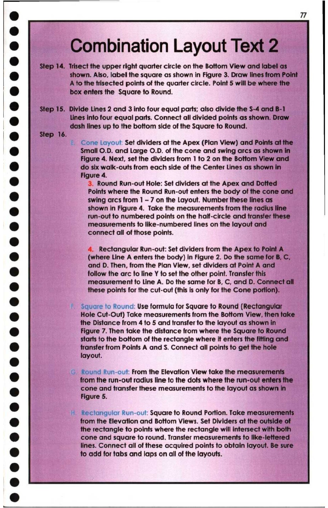

77. Combination Layout Text 2

fe) 7
° Combination Layout Text 2
e Step 14. Trisect the upper right quarter circle on the Bottom View and label as
@ shown. Also, label the square as shown in Figure 3. Draw lines from Point
A to the trisected points of the quarter circle. Point 5 will be where the
@ box enters the Square to Round. :
@ Step 15. Divide Lines 2 and 3 into four equal parts; also divide the S-4 and B-1
re lines into four equal parts. Connect all divided points as shown. Draw
| dash lines up to the bottom side of the Square to Round.
| @ Step 16.
* Cone Layout: Set dividers at the Apex (Plan View) and Points ai the
| [ } Small O.D. and Large O.D. of the cone and swing arcs as shown in
Figure 4. Next, set the dividers from 1 to 2 on the Bottom View and
8 do six walk-outs from each side of the Center Lines as shown in
Figure 4.
@ 3. Round Run-out Hole: Set dividers at the Apex and Dotted
Points where the Round Run-out enters the body of the cone and
8 swing arcs from 1 - 7 on the Layout. Number these lines as
@ shown in Figure 4. Take the measurements from the radius line
run-out to numbered points on the half-circle and transfer these
@ measurements to like-numbered lines on the layout and
: connect all of those points.
e 4. Rectangular Run-out: Set dividers from the Apex to Point A
& (where Line A enters the body) in Figure 2. Do the same for B, C,
and D. Then, from the Plan View, set dividers at Point A and
@ follow the arc to line Y fo set the other point. Transfer this :
measurement to Line A. Do the same for B, C, and D. Connect all”
) these points for the cut-out (this is only for the Cone portion).
® ~ Square fo Round: Use formula for Square to Round (Rectangular
& Hole Cut-Out) Take measurements from the Bottom View, then take —
the Distance from 4 to 5 and transfer to the layout as shown in
@ Figure 7. Then take the distance from where the Square to Round
starts to the bottom of the rectangle where it enters the fitting and
(2) transfer from Points A and S, Connect all points to get the hole
@ layout.
© Round Run-out: From the Elevation View take the measurements
@ from the run-out radius line to the dots where the run-out enters the
@ cone and transfer these measurements to the layout as shown in
Figure 5.
e ) Rectangular Run-out: Square to Round Portion. Take measurements
e from the Elevation and Bottom Views. Set Dividers at the outside of
the rectangle to points where the rectangle will intersect with both
e) cone and square to round. Transfer measurements fo like-lettered
lines. Connect all of these acquired points to obtain layout. Be sure
6 to add for tabs and laps on all of the layouts.
@
&
©